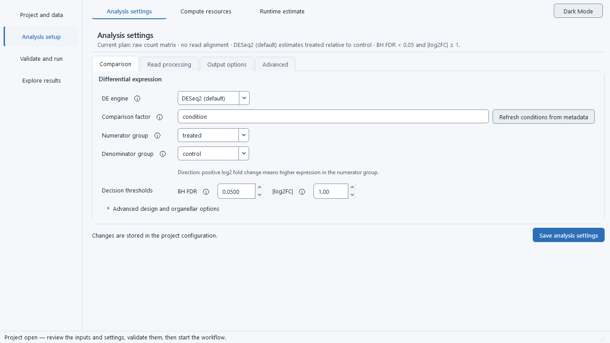
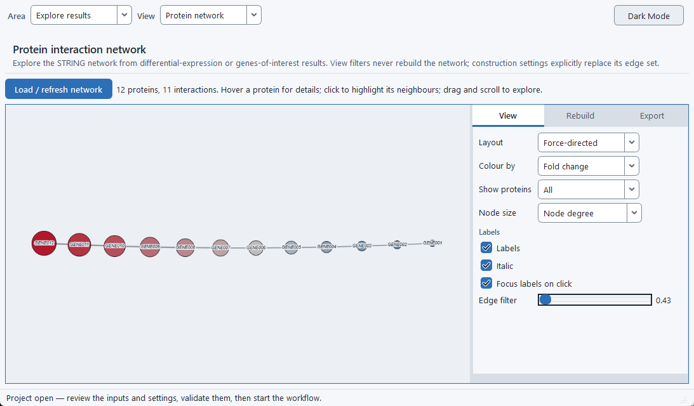

What the pipeline does
Analysis options
BulkSeq Studio runs a fixed, transparent sequence of steps from reads to results. Each stage exposes a small set of choices on the Workflow Settings tab. The defaults are set for a standard study, so a typical run only needs an organism, a contrast, and the data.

Quality control and trimming
Every FASTQ or SRA run starts with FastQC on the raw reads, then adapter and quality trimming, then FastQC again on the trimmed reads. The per-sample reports are collected into a single MultiQC summary you can open from the Run Monitor.
The trimmer is selectable. fastp is the default; you can also pick Trim Galore or Trimmomatic. Whichever you choose, the before/after FastQC steps and the MultiQC inputs follow along. Trimming is on by default; if your reads are already trimmed, uncheck it and the raw reads go straight to the aligner.
Optional ribosomal RNA removal
You can filter ribosomal RNA out of the reads before alignment, with a choice of two tools:
- SortMeRNA (default): reference-based. Trimmed reads are matched against an rRNA database and only the non-rRNA reads continue to the aligner. The database is downloaded and indexed once, each sample is filtered in its own working directory, and the per-sample rRNA percentage is added to the MultiQC report. The default reference is
smr_v4.3_default_db; you can pointsortmerna.databaseat a local FASTA, a FASTA URL, or a database tarball instead. - RiboDetector: reference-free. A machine-learning classifier that identifies rRNA reads without any database, running on CPU. Useful when no suitable rRNA reference is available for your organism.
Either tool runs on all three aligner routes and leaves the default (SortMeRNA) results unchanged.
Contamination screening (FastQ Screen)
An optional FastQ Screen pass maps a subset of each sample's reads against a panel of reference genomes and reports the fraction that matches each one, a quick check for cross-species contamination or unexpected sources. The result lands in the MultiQC report alongside the other QC modules. Point it at a FastQ Screen config file (Advanced parameters → Contamination: FastQ Screen config) that lists the bowtie2 genome indexes to screen against; it does not download a genome panel. If the screen is enabled without a config, it is skipped and the sanity check notes it.
Alignment and quantification
Three aligners are available, all validated end to end. They feed a gene-level count matrix in the same format, so everything after counting (differential expression, enrichment, the network, every figure) runs identically whichever you pick. Both single-end and paired-end reads run through all three routes.
- STAR (default): the standard splice-aware aligner; the genome index grows with genome size and needs the most RAM. Writes sorted BAM files.
- HISAT2: a graph aligner with a small index and low memory, for large crop genomes that overflow STAR while you still want BAM files.
- Salmon: alignment-free transcriptome quantification, the lowest memory of the three and the fastest. No BAM files; the transcriptome is built automatically from the genome and annotation.
Library strandedness is detected automatically on all three routes, so a stranded library is counted correctly without you setting it by hand.
The quantifier is matched to the aligner. featureCounts is the default counter. With the STAR aligner the Quantifier control becomes a real choice: alongside featureCounts you can pick STAR gene-counts, which reads gene counts straight from STAR's own --quantMode GeneCounts output with no extra counting pass. STAR gene-counts is a 0.15.0 option, validated against featureCounts on the same BAMs at Pearson r of about 0.998 (unstranded) to 1.000 (stranded). HISAT2 always pairs with featureCounts and Salmon with tximport, so they cannot be mis-set.
Extended alignment QC (RSeQC)
An optional RSeQC pass adds two extra views to the MultiQC report: the genomic-context read distribution (how reads split across exon, intron, and intergenic regions) and the 5′→3′ gene-body coverage. Because it works from the alignment, RSeQC runs only on the genome-BAM routes (STAR and HISAT2), not on Salmon, which produces no BAM files.
Differential expression
The differential-expression engine follows the input mode. RNA-seq and count-matrix runs use DESeq2 by default (with apeglm shrinkage and VST); GEO microarray runs use limma and produce a DESeq2-shaped results table, so the figures and downstream steps are the same. A microarray run takes its intensities from the submitter-normalized GEO series matrix by default, or optionally re-normalizes raw Affymetrix CEL files with RMA, with a log2-transform choice (auto-detect, force, or off); the GEO platform (GPL) is recorded in the outputs. Instead of fetching a GEO series, you can upload a local microarray matrix — your own gene-by-sample table of already-normalized log2 intensities (first column gene IDs or symbols, one column per sample, TSV or CSV) — which runs the same limma path with no GEO accession or download. You configure the design formula and the contrast (numerator, denominator, reference level), the significance threshold alpha, and the absolute log2 fold-change cutoff, which together split the genes into up- and down-regulated lists. A TOST equivalence test is also run to flag genes that are statistically unchanged, the complement of the significance call.
Two alternative engines are available for RNA-seq counts as a cross-check, best suited to larger designs: limma-voom and edgeR quasi-likelihood. All three engines emit the same result tables and figures, so everything downstream is identical whichever you run. DESeq2 remains the default and its result is unchanged. On Fusarium graminearum (spore vs mycelium) the alternatives track DESeq2 closely: limma-voom reaches a log2 fold-change Spearman correlation of 0.997 and a top-DEG Jaccard index of 0.94, edgeR quasi-likelihood reaches 1.000 and 0.97, and the shared differentially expressed genes agree on direction 100% of the time (benchmark B14).
The design helper: adjusting for batch and covariates
Differential expression compares gene expression between conditions, but other differences between samples can distort that comparison. If your controls were sequenced in one batch and your treated samples in another, or the samples come from different donors, sexes, or time points, that unwanted variation can be mistaken for a treatment effect (or can hide a real one). The standard fix is to tell the statistical model about those nuisance variables so it holds them constant while it measures the effect of interest. In the DESeq2 design formula, ~ condition compares conditions only, while ~ batch + condition first removes the batch differences and then compares conditions.
The Design helper (on the Workflow Settings tab, next to the design formula) builds this formula for you from your metadata columns, so you do not have to write R. It lists the extra columns in your sample table — anything that is not the sample ID, file paths, or the condition — and you tick the ones to adjust for (batch, sequencing run, donor, sex, time, and so on). It then writes an additive formula with the effect of interest last, for example ~ batch + condition. Adjusting for a known covariate removes its variation from the comparison, so a batch or donor difference is not counted as the treatment effect. Only additive adjustment is offered here, which covers the common case; genuine interaction terms (such as genotype:treatment) can still be typed directly into the formula field. Add the relevant columns on the Metadata tab first so the helper can see them. Adjust for a variable only if you know it differs systematically between your groups and could affect expression; adding irrelevant covariates costs statistical power.
Multi-study meta-analysis
When the sample sheet carries a dataset column (the study of origin) with more than one study and Multi-study meta-analysis is ticked on the Workflow Settings tab, the pipeline combines two or more independent studies of the same contrast — the same treatment-versus-control comparison run in different labs, tissues, or years — and asks which genes respond consistently across all of them. Each study is analysed on its own with DESeq2 first, so a difference in platform, library preparation, sequencing depth, or read length stays inside that study instead of leaking across the comparison. The per-study statistics are then combined two ways: the p-values with metaRNASeq's replicate-weighted inverse-normal method, and the unshrunken log2 fold changes with a metafor effect-size model (fixed-effect for two studies, DerSimonian–Laird random-effect for three or more).
The inverse-normal p-value is directionless, so a gene up in one study and down in another could otherwise be fused into a spuriously significant result. To prevent that, the sign of every study's fold change is checked, and a gene whose direction disagrees across studies is flagged as discordant and never called a meta-DEG — it stays in the table, searchable, but it is not presented as a cross-study hit. A convergent meta-DEG is therefore a gene that is both significant on the combined FDR and consistent in direction in every study. The joint DESeq2 that runs alongside the meta-analysis models study-of-origin as a covariate, so a default ~ condition design becomes ~ dataset + condition and its pooled result is not confounded by the studies.
Functional enrichment
Enrichment runs separately on the up- and down-regulated sets. GO over-representation and GSEA come from clusterProfiler when a Bioconductor OrgDb is installed for the organism (human, mouse, fly, and others); for human and mouse it also adds disease-ontology terms. Organisms without an OrgDb fall back to g:Profiler for GO. KEGG pathway ORA and GSEA run for any organism that has a KEGG code, even without an OrgDb, so fungi, bacteria, and other non-model organisms are not skipped. Selecting an organism preset auto-configures its enrichment databases and STRING taxon.
You can also supply your own gene sets: a GMT file and/or an id-to-term annotation table, with an optional background list for the over-representation universe. This runs a clusterProfiler ORA and GSEA alongside the built-in GO and KEGG and is organism-agnostic, so it works where the built-in GO route is skipped. Custom gene-set enrichment is a 0.15.0 option. The gene IDs must use the run's identifier format; a namespace mismatch is flagged as REVIEW_REQUIRED rather than returned as a silent empty result.
For a focused look, a genes-of-interest list produces its own z-scored heatmap, per-condition expression panel, and counts table from an existing run without re-analysis. The IDs you paste are matched to the run's genes by locus tag, Ensembl/RefSeq ID, or symbol; when few or none match, the report leads with a warning and shows examples of the run's actual ID format so you can correct the list.
GSVA pathway activity
An optional GSVA module scores gene-set activity per sample from your own custom gene sets, drawn as a sample-by-set heatmap. Because it uses only the gene sets you supply, it is organism-safe and valid for non-model organisms. GSVA produces descriptive per-sample activity scores, not a significance test, so read the heatmap as a view of how each set's activity varies across samples rather than as a formal enrichment result.
Protein-interaction networks
BulkSeq Studio builds a STRING protein-protein interaction network for the significant genes and seeds it by symbol or, for symbol-less annotations like the FGSG_ locus tags of Fusarium graminearum, by gene ID. The network exports to Cytoscape as GraphML, SIF, and cytoscape.js JSON for external editing. A dedicated PPI Network tab embeds the same network in an interactive view.

Extra statistics
Beyond the differential test, the pipeline writes a set of diagnostics: sample-to-sample correlation heatmaps (Pearson and Spearman), a Wilcoxon rank-sum concordance check, the TOST equivalence call described above, and an MSigDB Hallmark set-overlap.
Advanced parameters
A collapsible Advanced parameters panel on the Workflow Settings tab surfaces the important knobs of each tool (fastp, Trimmomatic, RiboDetector, FastQ Screen, STAR, featureCounts, DESeq2, and the rest), with the validated defaults pre-filled. Leave it collapsed for a standard run; open it only when you need to change a specific parameter. Because the defaults reproduce the standard behaviour, a run is unchanged unless you edit a value.
Non-model organisms
The reference catalog ships 46 organism presets: human and mouse, model animals (rat, chicken, pig, cattle), crops (including grape, cotton, Medicago truncatula, and tobacco), fungal and plant pathogens (Zymoseptoria tritici, Ustilago maydis, Sclerotinia sclerotiorum, Aspergillus niger), bacteria (Pseudomonas aeruginosa, Mycobacterium tuberculosis, Staphylococcus aureus), and the malaria parasite Plasmodium falciparum. Each preset's genome and annotation URLs were checked to resolve, and its KEGG code, STRING taxon, and Bioconductor OrgDb (where one exists) verified, before inclusion.
Crops and fungi that have no Bioconductor OrgDb are not left without downstream analysis. As long as the organism has a KEGG code and a STRING taxon, KEGG enrichment and the STRING network still run, and g:Profiler supplies GO where it is available. This is how rice, the other crop presets, and Fusarium graminearum reach full enrichment and network outputs.